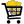

管理サーバー
WebLogic Remote Consoleは、WebLogic管理サーバーに直接接続して、WebLogic Server管理コンソールのようにドメインを表示および編集できますが、「いくつかの違い」があります。
複数のWebLogic管理サーバーの接続詳細を保存すると、クリックでドメインを切り替えることが容易になります。
WebLogic管理サーバーへの接続
- WebLogic管理サーバーを起動します。
- キオスクを展開し、プロジェクト名の横にある「⋮」をクリックします。 「管理サーバー接続プロバイダの追加」を選択します。
- 管理サーバー接続の名前を入力します。 これは、作業中のプロバイダを識別できるように、プロバイダのプロジェクト・リストに表示される名前です。
- 選択した管理サーバーで編集権限を持つユーザー・アカウントのユーザー名とパスワードを入力します。 管理コンソールと同様に、管理機能はユーザー・アカウントに付与されるアクセス・レベルに応じて制限されます。 詳細は、「アクセスの相違の理解」を参照してください。 異なるユーザーを持つ同じ管理サーバーへの複数の接続を選択できます。
- 管理サーバーのURLを入力します。
- OKをクリックして、WebLogic Remote ConsoleをWebLogic管理サーバーに接続します。
これで、WebLogic Remote ConsoleはWebLogic管理サーバーに接続されます。 必要に応じて、ドメインを変更できます。
WebLogic管理サーバーの編集
WebLogic Remote Consoleでのドメインの編集は、管理コンソールと同様に処理されます。 ドメインの編集を開始すると、他のユーザーが同時に変更をブロックする構成ロックが作成されます。 変更が完了したら、これらの変更をアクティブ化し、管理サーバーと永続化できます。
WebLogic Remote Console内の特定の領域およびアクションは、非管理から非表示になります。 たとえば、オペレータ・ロールを持つユーザーには、ツリーの編集を表示できません。 各ユーザー・ロールによるアクセス(またはアクセスできない)方法の詳細は、「アクセスの相違の理解」を参照してください。
- キオスクを展開し、編集する管理サーバーを選択します。
- 「ツリーの編集」のパースペクティブをクリックし、ドメイン構成を変更します。 でマークされたフィールドには、サーバーの再起動が必要です。
- 変更後、すべてのページの「保存」をクリックします。
- 拡張機能がインストールされている場合は、キオスクを展開し、「ショッピング・カート」を選択して変更を表示します。
- 変更をコミットします。 コンテンツ・ペインの右上隅で、、「変更のコミット」の順にクリックします。
- 必要に応じてサーバーを再起動します。
- 「モニタリング・ツリー」のパースペクティブ> 「環境」 > 「サーバー」ページで、再起動が必要なサーバーがあるかどうかを確認します。
フィールドをデフォルト値にリストアできます。 フィールドを右クリックし、「デフォルトに戻す」をクリックします。
ショッピング・カート
ショッピング・カート(WebLogic Server管理コンソールの変更リストと同等)には、WebLogic Remote Consoleの現在のセッションの保留中の変更がすべて保持されます。 ショッピング・カートでは、変更が保留中かどうかを確認したり、変更をコミットしたり、変更を完全に破棄したりできます。
コンソール拡張console-rest-ext-2.0.warをインストールした場合は、変更した特定の変更および変更マネージャでのロックのステータスも確認できます。 変更を元に戻す必要がある場合は、すべてのショッピング・カートの内容を破棄するか、ツリーの編集のパースペクティブで変更を手動で元に戻す必要があります。
構成の変更をロックしても、同じ管理ユーザー・アカウントを使用した相反する構成の編集を防ぐことはできません。 たとえば、WebLogic Remote Consoleで構成変更ロックを取得した後、同じユーザー・アカウントで管理コンソールまたはWebLogic Scripting Tool (WLST)を使用する場合、WebLogic Remote Consoleで開いたものと同じ編集セッションにアクセスすると、他のツールで変更できなくなります。
セッションの1つが変更をアクティブ化するとロックが解放され、他のセッションは変更を保存またはアクティブ化できないため、複数のツールを使用して変更を行うことをお薦めします。
一部の変更はただちにアクティブ化(動的)できますが、その他の変更ではサーバーがアクティブ化(動的でない)を開始する必要があります。 非動的変更をアクティブ化する必要がある場合は、モニタリングのパースペクティブから「環境」 > 「サーバー」ノードに移動して、再起動が必要なサーバーを確認します。
WebLogic管理サーバーの接続詳細を編集
- キオスクを展開し、編集するWebLogic管理サーバー接続の横にある
 アイコンをクリックします。
アイコンをクリックします。 - WebLogic管理サーバーの詳細を編集します。 WebLogic Remote Consoleで名前を変更したり、ユーザー・アカウントを切り替えたり、URLを更新したりできます。
- 「OK」をクリックして変更を保存します。
WebLogic管理サーバーの接続詳細の表示
WebLogic Server接続の詳細を簡単に確認できます。
- キオスクを展開し、WebLogic管理サーバーの横にある
 アイコンをクリックします。
アイコンをクリックします。
次のような接続の詳細のリストが表示されます:
- プロバイダID
- ドメイン名
- ドメインURL
- ドメイン・バージョン
- ユーザー名
- ロール
WebLogic管理サーバーへの接続の削除
これにより、WebLogic管理サーバーへのWebLogic Remote Consoleアクセスのみが削除されます。 ドメイン自体は影響を受けません。
- キオスクを展開し、WebLogic管理サーバーの横にある
 アイコンをクリックします。
アイコンをクリックします。
コントロール操作
WebLogic Remote Consoleは、モニタリングのパースペクティブから管理サーバーの制御操作を提供します。
サーバーの状態の変更
サーバーの状態は、ライフサイクル管理におけるサーバーの特定の状態を示します。
- キオスクを展開し、WebLogic管理サーバー接続を選択します。
- ホーム・ページから「モニタリング」のパースペクティブを選択します。
- 「環境」>「サーバー」に移動します
- サーバーのアクションを選択します:
- 起動
- 再開
- 中断
- 停止
- SSLの再起動
- アクションを開始するタイミングを選択します:
- 「作業完了時」
- 「ただちに強制停止」
- ダイアログ・ボックスで、状態を変更するサーバーを「使用可能」から「選択済」に移動します。
- 処理を開始します。
アプリケーションの開始または停止
- キオスクを展開し、WebLogic管理サーバー接続を選択します。
- ホーム・ページから「モニタリング」のパースペクティブを選択します。
- 「デプロイメント」 > 「アプリケーション・デプロイメント・ランタイム」に移動します。
- アプリケーションのアクションを選択します:
- 起動
- 停止
- ダイアログ・ボックスで、状態を変更するアプリケーションを「使用可能」から「選択済」に移動します。
- 変更を開始します。
MBeansの作成
WebLogic Remote Consoleには、アプリケーションのデプロイおよびJDBCシステム・リソースの作成のための簡略化されたウィザードが含まれています。
ほとんどの場合、ページに新しいMBeanを作成するときに、名前などのいくつかのキー・プロパティを入力するように求められ、「作成」をクリックします。 WebLogic Server管理コンソールとは異なり、WebLogic Remote Consoleでは、通常は構成を完了するために必要な他のプロパティを構成する方法はありません。 かわりに、新しいBeanのページが表示され、タブをクリックしてBeanの構成を終了できます。
別のBeanを参照するBeanプロパティを構成する場合は、まず他のBeanを作成する必要があります。 たとえば、Server1をCluster1に割り当てる場合、サーバー作成時にCluster1を作成することを選択できるWebLogic Server管理コンソールとは異なり、最初にCluster1を作成する必要があります。
ユーザーとグループの管理
セキュリティ・レルム内のデフォルトの認証プロバイダ(WebLogic認証プロバイダ)の一部として構成されているWebLogic Serverユーザーおよびグループを簡単に管理できます。 デフォルトの認証プロバイダのみがサポートされています。 デフォルトの認証プロバイダを使用しない場合は、独自の外部ツールを使用してユーザーとグループを管理する必要があります。
ユーザーおよびグループは、セキュリティ・データ・ツリーのパースペクティブで管理されます。 このパースペクティブにアクセスするには、Adminロールを持つユーザーとしてログインし、WebLogic Remote Console拡張がインストールされている必要があります。 手順については、「WebLogic Remote Consoleのインストール」を参照してください。
ユーザーおよびグループに対して行った変更は即時に行われます - 変更を適用するためにサーバーをコミットまたはリブートする必要はありません。
ユーザーの作成
- セキュリティ・データ・ツリーのパースペクティブで、レルムを展開します。
- ユーザーの追加先のセキュリティ・レルムを選択してください。
- Authentication Providerノードを展開し、ユーザーを追加する認証プロバイダを選択します。
- ユーザーを展開し、「新規」をクリックします。
- このユーザーの名前、説明およびパスワードを入力します。 ユーザー名はセキュリティ・レルム内で一意で、パスワードは8文字以上である必要があります。
- 「作成」をクリックします。
グループの作成
- セキュリティ・データ・ツリーのパースペクティブで、レルムを展開します。
- グループを追加するセキュリティ・レルムを選択します。
- Authentication Providerノードを展開し、グループを追加する認証プロバイダを選択します。
- グループを展開し、「新規」をクリックします。
- このグループの名前と摘要を入力します。 グループ名はセキュリティ・レルム内で一意である必要があります。
- 「作成」をクリックします。
ユーザーの編集
- セキュリティ・データ・ツリーのパースペクティブから、レルム>realmName>認証プロバイダ>providerName>ユーザーに移動します。
- 編集するユーザーをクリックします。
- 様々なタブを移動して、ユーザーのプロパティを更新します。 ユーザーの名前は編集できません - 新しいユーザーを削除して作成する必要があります。
- グループにユーザーを追加できます。 メンバーシップ・タブで、ユーザーを追加する使用可能なグループを選択し、選択済に移動します。
- 「保存」をクリックします
グループの編集
- セキュリティ・データ・ツリーのパースペクティブから、レルム>realmName>認証プロバイダ>providerName>グループに移動します。
- 編集するグループをクリックします。 グループの説明を変更するか、メンバーシップ・タブで現在のグループを他のグループの下にネストできます。 グループの名前は編集できません - 新しいグループを削除して作成する必要があります。
- 「保存」をクリックします
ユーザーの削除
- セキュリティ・データ・ツリーのパースペクティブから、レルム>realmName>認証プロバイダ>providerName>ユーザーに移動します。
- 削除するユーザーの横で、ごみ箱アイコンをクリックします。
グループの削除
グループを削除しても、そのグループ内のユーザーは削除されません。
- セキュリティ・データ・ツリーのパースペクティブから、レルム>realmName>認証プロバイダ>providerName>グループに移動します。
- 削除するグループの横で、ごみ箱アイコンをクリックします。